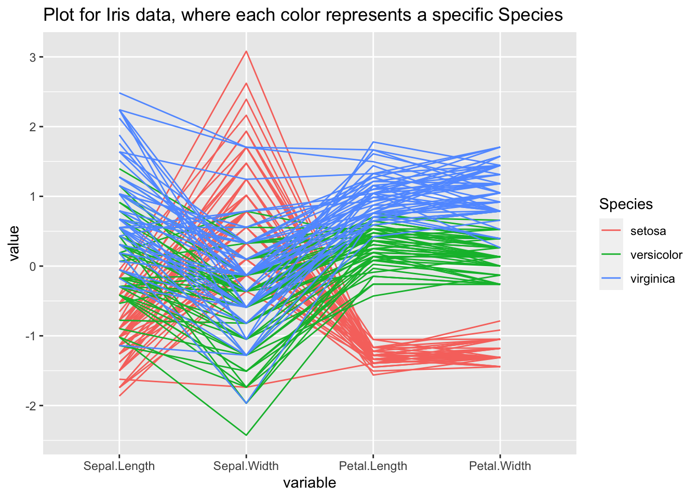
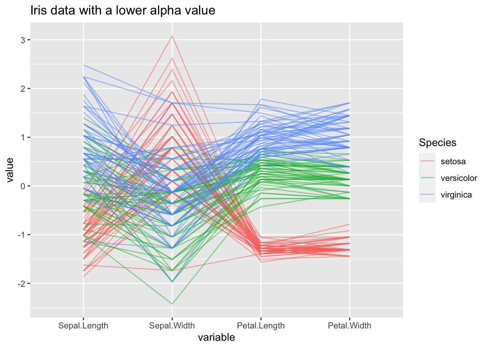
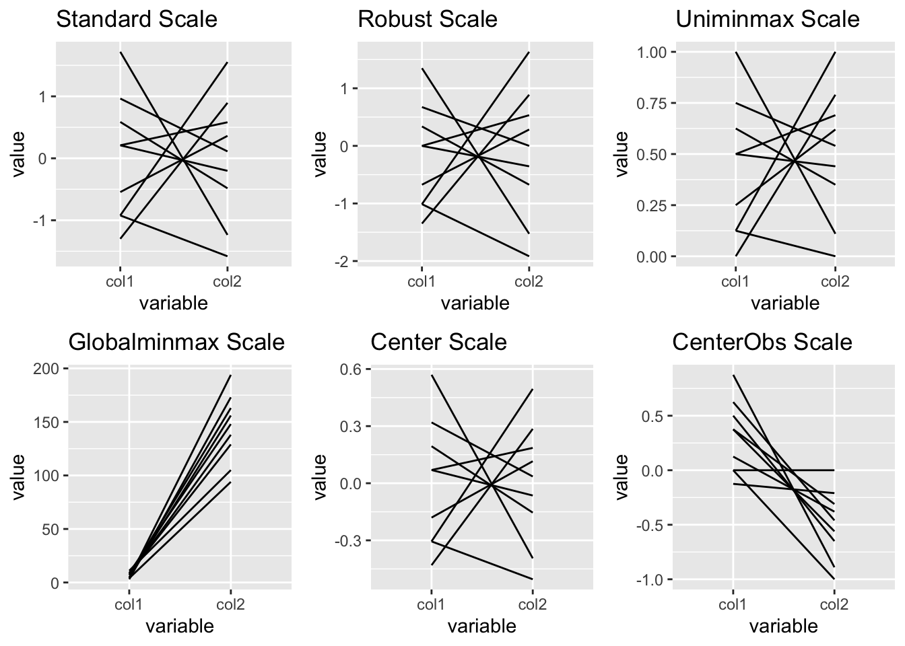
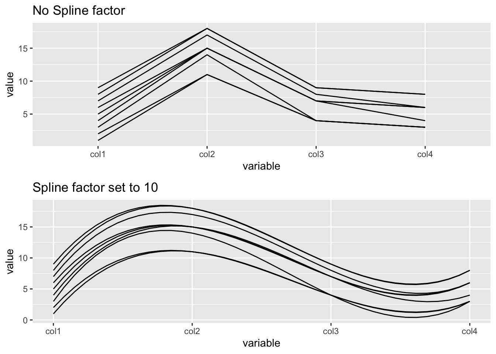

14 Chart: Parallel Coordinate Plots
This chapter originated as a community contribution created by aashnakanuga
14.1 Overview
This section covers how to create static parallel coordinate plots with the GGally package.
For interactive parallel coordinate plots, check out the parcoords package. The package vignette provides instructions on using this package.
14.2 tl;dr
I want a Fancy Example! Not tomorrow, not after breakfast, NOW!
Here’s a look at the effect of different attributes on each Fair cut diamond from the “diamonds” dataset:

And here’s the code:
library(GGally)
library(dplyr)
#subset the data to get the first thousand cases
diamonds_subset <- subset(diamonds[1:1000,])
#rename the variables to understand what they signify
names(diamonds_subset)<-c("carat","cut","color","clarity","depth_percentage","table","price","length","width","depth")
#Create a new column to highlight the fair cut diamonds
ds_fair<-within(diamonds_subset, diamond_cut<-if_else(cut=="Fair", "Fair", "Other"))
#Create the graph
ggparcoord(ds_fair[order(ds_fair$diamond_cut, decreasing=TRUE),], columns=c(1,5,7:10),
groupColumn = "diamond_cut", alphaLines = 0.8, order=c(5,1,8,9,10,7),
title = "Parallel Coordinate Plot showing trends for Fair cut diamonds", scale = "uniminmax") +
scale_color_manual(values=c("maroon","gray"))For more information about the dataset, type ?diamonds into the console.
14.3 Simple examples
Woah woah woah! Too complicated! Much simpler, please.
Let us use the popular “iris” dataset for this example:
library(datasets)
library(GGally)
ggparcoord(iris, columns=1:4, title = "Parallel coordinate plot for Iris flowers")
For more information about the dataset, type ?iris into the console.
14.4 Theory
For more info about parallel coordinate plots and multivariate continuous data, check out Chapter 6 of the textbook.
14.5 When to use
Generally, parallel coordinate plots are used to infer relationships between multiple continuous variables - we mostly use them to detect a general trend that our data follows, and also the specific cases that are outliers.
Please keep in mind that parallel coordinate plots are not the ideal graph to use when there are just categorical variables involved. We can include a few categorical variables in our axes or for the sake of clustering, but using a lot of categorical variables results in overlapping profiles, which makes it difficult to interpret.
We can also use parallel coordinate plots to identify trends in specific clusters - just highlight each cluster in a different color using the groupColumn attribute of ggparcoord() to specify your column, and you are good to go!
Sometimes, parallel coordinate plots are very helpful in graphing time series data - where we have information stored at regular time intervals. Each vertical axis will now become a time point and we need to pass that column in ggparcoord’s “column” attribute.
14.6 Considerations
14.6.1 When do I use clustering?
Generally, you use clustering when you want to observe a pattern in a set of cases with some specific properties. This may include divvying up all variables into clusters based on their value for a specific categorical variable. But you can even use a continuous variable; for example, dividing all cases into two sections based on some continuous variable height: those who have a height greater than 150cm and those who do not.
Let us look at an example using our iris dataset, clustering on the “Species” column:
library(GGally)
#highlight the clusters based on the Species column
graph<-ggparcoord(iris, columns=1:4, groupColumn = 5, title = "Plot for Iris data, where each color represents a specific Species")
graph
14.6.2 Deciding the value of alpha
In practice, parallel coordinate plots are not going to be used for very small datasets. Your data will likely have thousands and thousands of cases, and sometimes it can get very difficult to observe anything when so many of your cases will overlap. So we set the aplhaLines parameter to a value between zero and one, and it reduces the opacity of all lines so that you can get a clearer view of what is going on if you have too many overlapping cases.
Again we use our iris data, but reduce alpha to 0.5. Observe how much easier it is now to trace the course of every case:
library(ggplot2)
library(GGally)
#set the value of alpha to 0.5
ggparcoord(iris, columns=1:4, groupColumn = 5, alphaLines = 0.5, title = "Iris data with a lower alpha value")
14.6.3 Scales
When we use ggparcoord(), we have an option to set the scale attribute, which will scale all variables so we can compare their values.
The different types of scales are as follows:
- std: default value, where it subtracts mean and divides by SD
- robust: subtract median and divide by median absolute deviation
- uniminmax: scale all values so that the minimum is at 0 and maximum at 1
- globalminmax: no scaling, original values taken
- center: centers each variable according to the value given in scaleSummary
- centerObs: centers each variable according to the value of the observation given in centerObsID
Let us create a sample dataset and see how values on the y-axis change for different scales:
library(ggplot2)
library(GGally)
library(gridExtra)
#creating a sample dataset
df1<-data.frame(col1=c(11,4,7,4,3,8,5,7,9), col2=c(105,94,138,194,173,129,156,163,148))
#pay attention to the different values on the y-axis
g1<-ggparcoord(df1, columns=1:2, scale = "std", title = "Standard Scale")
g2<-ggparcoord(df1, columns=1:2, scale = "robust", title = "Robust Scale")
g3<-ggparcoord(df1, columns=1:2, scale = "uniminmax", title = "Uniminmax Scale")
g4<-ggparcoord(df1, columns=1:2, scale = "globalminmax", title = "Globalminmax Scale")
g5<-ggparcoord(df1, columns=1:2, scale = "center", scaleSummary = "mean", title = "Center Scale")
g6<-ggparcoord(df1, columns=1:2, scale = "centerObs", centerObsID = 4, title = "CenterObs Scale")
grid.arrange(g1, g2, g3, g4, g5, g6, nrow=2)
14.6.4 Order of the variables
Deciding the order of the variables on the y-axis depends on your application. It can be specified using the order parameter.
The different types of order are as follows:
- default: the order in which we add our variables to the column attribute
- given vector: providing a vector of the order we need (used most frequently)
- anyClass: order based on the separation of a variable from the rest (F-statistic - each variable v/s the rest)
- allClass: order based on the variation between classes (F-statistic - group column v/s the rest)
- skewness: order from most to least skewed
- Outlying: order based on the Outlying measure
14.7 Modifications
14.7.1 Flipping the coordinates
A good idea if we have too many variables and their names are overlapping on the x-axis:
library(ggplot2)
library(GGally)
#using the iris dataset
graph + coord_flip()
14.7.2 Highlighting trends
Let us see what trend the versicolor Species of the iris dataset follows over the other variables:
library(ggplot2)
library(GGally)
library(dplyr)
#get a new column that says "Yes" of the Species is versicolor.
ds_versi<-within(iris, versicolor<-if_else(Species=="versicolor", "Yes", "No"))
ggparcoord(ds_versi[order(ds_versi$versicolor),], columns = 1:4, groupColumn = "versicolor", title = "Highlighting trends of Versicolor species") +
scale_color_manual(values=c("gray","maroon"))
14.7.3 Using splines
Generally, we use splines if we have a column where there are a lot of repeating values, which adds a lot of noise. The case lines become more and more curved when we set a higher spline factor, which removes noise and makes for easier observations of trends. It can be set using the splineFactor attribute:
library(ggplot2)
library(GGally)
library(gridExtra)
#create a sample dataset
df2<-data.frame(col1=c(1:9), col2=c(11,11,14,15,15,15,17,18,18), col3=c(4,4,4,7,7,7,8,9,9), col4=c(3,3,3,4,6,6,6,8,8))
#plot without spline
g7<-ggparcoord(df2, columns = 1:4, scale = "globalminmax", title = "No Spline factor")
#plot with spline
g8<-ggparcoord(df2, columns = 1:4, scale = "globalminmax", splineFactor=10, title = "Spline factor set to 10")
grid.arrange(g7,g8)
14.7.4 Adding boxplots to the graph
You can add boxplots to your graph, which can be useful for observing the trend of median values. Generally, they are added to data with a lot of variables - for example, if we plot time series data.
14.8 Other Packages
There are a number of packages that have functions for creating parallel coordinate plots: [to do: add links]
parcoords::parcoords()– great interactive optionggplot2::geom_line()– not specific to parallel coordinate plots but easy to create with thegroup=parameter.lattice::parallelplot()MASS::parcoord()
14.9 External Resources
- Introduction to parallel coordinate plots: An excellent resource giving details of all attributes and possible values. Also has some good examples.
- How to create interactive parallel coordinate plots: a nice walkthrough on using plotly to create an interactive parallel coordinate plot.
- Different methods to create parallel coordinate plots: This is specifically when we have categorical variables.
with